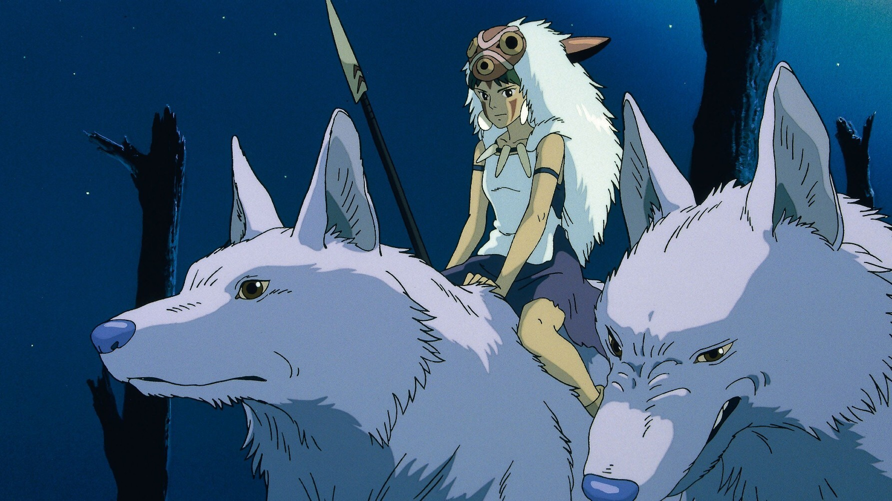
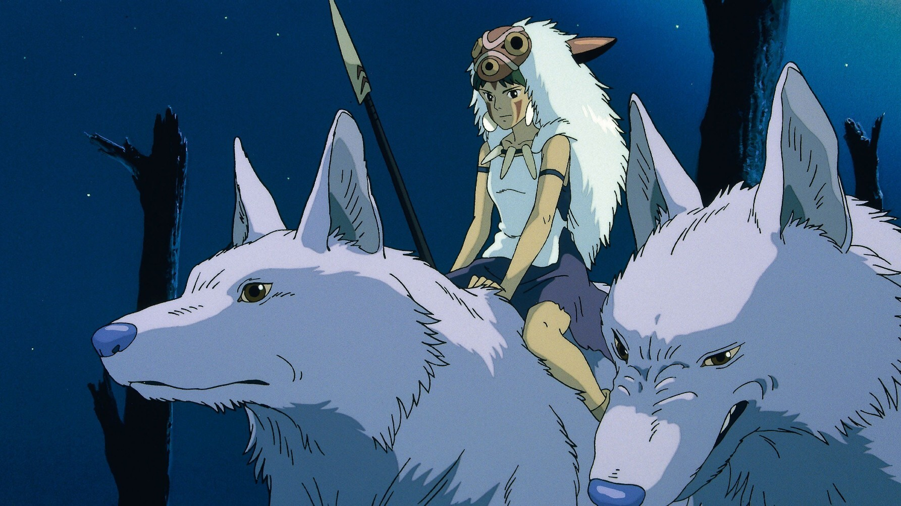

6 obras de animación para cuando no sepas qué ver
Leer másHayao Miyazaki, cofundador del Studio Ghibli, es uno de los directores de cine de animación más influyentes de la historia. Con películas como Mi vecino Totoro, El viaje de Chihiro o El castillo ambulante, Miyazaki ha convertido la animación en un medio capaz de contar historias profundas, emotivas y universales, accesibles tanto para niños como para adultos.
Miyazaki es conocido por su atención al detalle, la fluidez de sus animaciones y la creación de mundos que parecen vivos. Sus películas combinan paisajes exuberantes, ciudades llenas de vida y personajes que transmiten emociones complejas con gestos mínimos. El uso del color, la luz y la perspectiva crea atmósferas únicas que refuerzan la narrativa: los cielos, los bosques y los entornos urbanos se sienten reales y poéticos al mismo tiempo.
Miyazaki no reduce a sus personajes a estereotipos,sino que les dorta de una humanidad compleja, con ideales, sueños, pensamientos y contradicciones. Sus protagonistas, a menudo jóvenes, muestran fortaleza, vulnerabilidad y curiosidad. Las historias exploran temas como la amistad, la madurez, el respeto por la naturaleza y la lucha contra la injusticia, siempre con un toque de magia que permite reflexionar sobre lo humano sin perder la fantasía.
 

Miyazaki mezcla lo mundano con lo extraordinario, creando mundos mágicos llenos de humanidad y crítica social. En El viaje de Chihiro, una niña ordinaria se enfrenta a un mundo espiritual, mientras en Nausicaä del Valle del Viento, la protagonista lucha por preservar la naturaleza frente a la guerra y la contaminación. Esta combinación de aventura, emoción y reflexión ecológica o social convierte cada película en un relato que trasciende edades y culturas.
Miyazaki ha revolucionado la animación mundial, demostrando que el cine de animación puede ser arte, narrativa compleja y reflexión social al mismo tiempo. Su influencia es evidente en animadores de todo el mundo y ha inspirado a nuevas generaciones a ver la animación no solo como entretenimiento, sino como vehículo de emociones, valores y creatividad sin límites.
Con su sensibilidad única y su perfeccionismo, Hayao Miyazaki ha logrado que cada fotograma cuente una historia, que cada escena se sienta viva y que la animación siga siendo una forma de expresión artística capaz de tocar el corazón de millones de personas.
Si quieres participar en nuestra comunidad, tienes alguna pregunta, sugerencia o comentario, contacta con nosotros desde el formulario de Contacto o a través de los siguientes métdos: